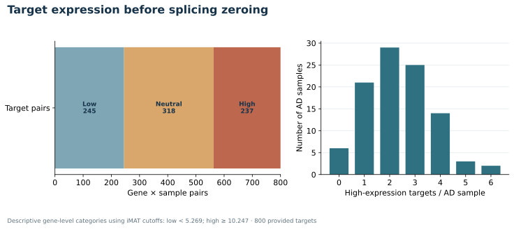
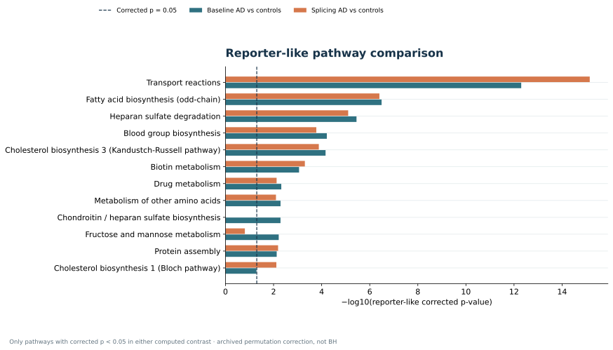

Layer 01
Expression only
6,848 median active reactions / AD-labelled sample
5290 Fisher raw p < .0517 reporter corrected p < .05
Sample diagnostics ↗COBAMP GPR scoring and TROPPO iMAT with Gurobi across 200 artificial samples. Three staged inputs, one verified model, complete reaction matrices and auditable output tables.
Synthetic data only · no biological interpretationThe same 100 AD-labelled and 100 control-labelled synthetic samples pass through each layer. Only AD-labelled expression is modified. Figures are calculated from the supplied inputs, committed reaction matrices, and downstream statistics.
Layer 01
6,848 median active reactions / AD-labelled sample
Layer 02
6,832 median active reactions / AD-labelled sample
Layer 03
6,794 median active reactions / AD-labelled sample
Each plot is generated by 05_plot_results.py from the solved matrices, the supplied target list, and calculated statistics. Dots in the reaction-count figures represent individual synthetic samples.




All 100 AD-labelled samples were matched to their own adjusted model. Median active-reaction Jaccard: 0.923; median Overlap index: 0.963. Significant reporter-like pathway-set overlap: 0.700 Jaccard / 0.824 Overlap. The pathway comparison is undefined when either set is empty.
Per-sample similarity and model-size data · Target expression audit
Reaction-level Fisher p-values and reporter-like pathway p-values answer different questions. An associated subsystem below is not necessarily a statistically significant pathway.
| Layer | Reaction | Raw p | BH p |
|---|---|---|---|
| Expression only | MAR04122 | 2.2e-59 | 7.7e-58 |
| Expression only | MAR04497 | 2.2e-59 | 7.7e-58 |
| Expression only | MAR04351 | 2.2e-59 | 7.7e-58 |
| Splicing informed | MAR04122 | 2.2e-59 | 9.5e-58 |
| Splicing informed | MAR04497 | 2.2e-59 | 9.5e-58 |
| Splicing informed | MAR04351 | 2.2e-59 | 9.5e-58 |
| Splicing + pathogenicity | MAR04122 | 2.2e-59 | 1.3e-57 |
| Splicing + pathogenicity | MAR04497 | 2.2e-59 | 1.3e-57 |
| Splicing + pathogenicity | MAR04351 | 2.2e-59 | 1.3e-57 |
| Layer | Subsystem | Corrected p |
|---|---|---|
| Expression only | Transport reactions | 5e-13 |
| Expression only | Fatty acid biosynthesis (odd-chain) | 3.2e-07 |
| Expression only | Heparan sulfate degradation | 3.6e-06 |
| Splicing informed | Transport reactions | 7.1e-16 |
| Splicing informed | Fatty acid biosynthesis (odd-chain) | 4e-07 |
| Splicing informed | Heparan sulfate degradation | 7.9e-06 |
| Splicing + pathogenicity | Transport reactions | 1.8e-18 |
| Splicing + pathogenicity | Fatty acid biosynthesis (odd-chain) | 1.8e-07 |
| Splicing + pathogenicity | Heparan sulfate degradation | 2.2e-06 |
| Layer | Associated subsystem | Reaction count | Reporter significant? |
|---|---|---|---|
| Expression only | Transport reactions | 2051 | Yes |
| Expression only | Exchange/demand reactions | 546 | No |
| Expression only | Drug metabolism | 286 | Yes |
| Splicing informed | Transport reactions | 2047 | Yes |
| Splicing informed | Exchange/demand reactions | 551 | No |
| Splicing informed | Drug metabolism | 287 | Yes |
| Splicing + pathogenicity | Transport reactions | 2046 | Yes |
| Splicing + pathogenicity | Exchange/demand reactions | 552 | No |
| Splicing + pathogenicity | Drug metabolism | 288 | Yes |
The complete matrices are gzip-compressed TSV files. Decompress them with gzip -dc file.tsv.gz. The accompanying diagnostics and statistics are ordinary TSV files.
Analysis summary TSV · SHA-256 manifest · Run metadata · Run instructions